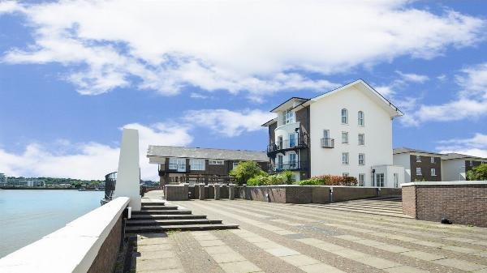
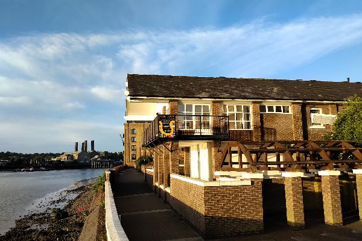
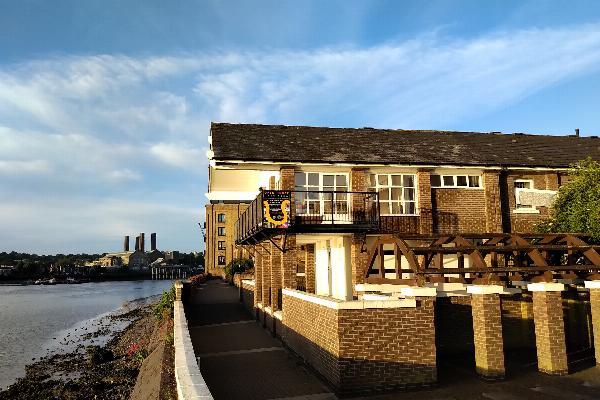
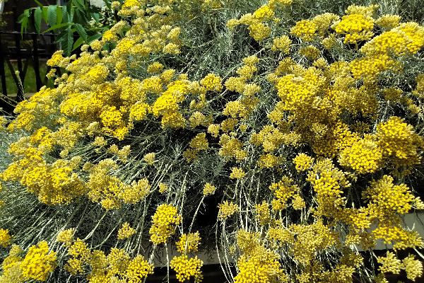

Facilities
Community Building



The Estate includes a community building, located at the top of Sextant Avenue. The building includes a function room located at first floor level with views over the River, as well as a small kitchen and toilet, and a garden area at ground level. The building is available for all residents of the Estate to use. There is no set fee for use, but a contribution towards running costs would be welcome. Access can be arranged via the Residents Association.
Garden
The communal garden (also known as Stone Garden) is available for all residents to use and enjoy. It is accessed from the two gates on Mariners Mews and the code can be obtained from IPM or the Residents Association. Do please leave it as you would like to find it.
